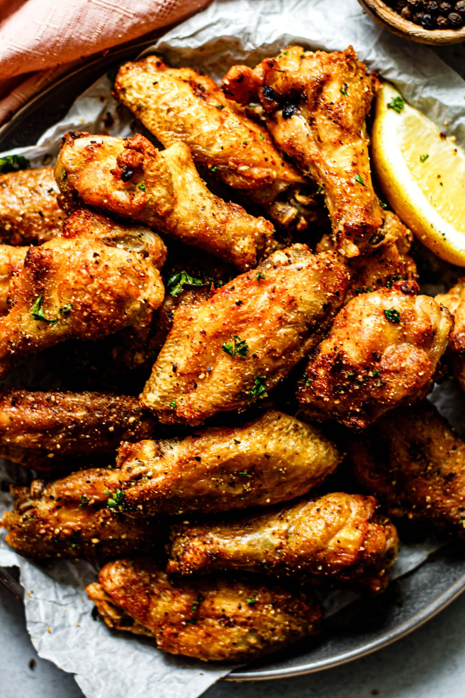

Ingredients
- 3 lbs chicken wings cut into sections
- 1 cup of all purpose flour
- 2 teaspoons of salt
- 1 teaspoon pepper
- Oil for frying
- 1/4 cup butter melted
- 1 1/2 tablespoons lemon pepper seasoning
- 2 tablespoons chopped parsley
- Lemon wedges and parsley sprigs for serving (optional)
Directions
- Place the flour in a large bowl and season with the salt and pepper. Stir to combine.
- Place the chicken wings in the bowl; gently toss to coat with flour mixture.
- Heat 4 inches of oil in a large pot to 350 degrees F
- Add the chicken wings to the pot in batches of about 6-8 wings. Fry for 10-12 minutes or until wings are deep golden brown and cooked through. Repeat with remaining wings.
- In a small bowl, combine the butter and lemon pepper seasoning. Brush the butter mixture over the chicken wings and toss to coat. Sprinkle with parsley and serve.
- Garnish with lemon wedges and parsley sprigs if desired.